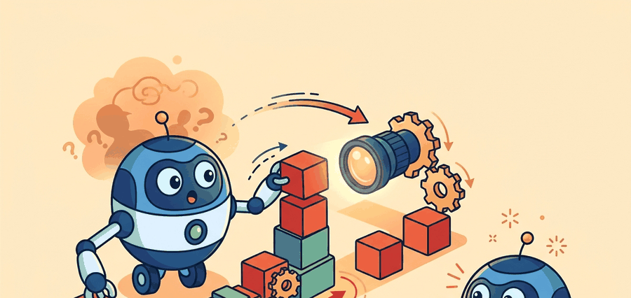

"Knowing the name of an object and knowing how to reach for it are answers to entirely different questions."
An Embodied Perception Stack

This section assumes familiarity with the visual perception pipeline introduced in section 27.1 and the localization concepts from section 29.1. The representation ideas introduced here are examined in depth in section 32.2 (CLIP, SigLIP, and DINOv2 encoders) and section 32.3 (open-vocabulary detection), which show how the same pretrained features become grounding tools for robot scenes.
Read the figure as a grounding pipeline: image and language tokens are not yet robot state until the section explains how they become time-stamped facts, affordances, uncertainty, and a logged control decision.
Build And Evaluation Checklist
Curriculum, depth, and self-containment. Image-text pretraining gives embodied agents broad semantic priors, but action requires geometry, timing, and state. The section separates recognition from control. For From image-text models to embodied perception, the practical reading is to pin down the interface, assumptions, concrete example, and failure mode before comparing methods.
Production and evaluation contract. A VLM feature is useful for embodiment only when it improves the next observation, state estimate, or action choice. For From image-text models to embodied perception, treat the diagram, code, table, exercise, warning, and references as one evidence packet: boundary, artifact, tool choice, transfer check, failure mode, and source grounding.
Before accepting a From image-text models to embodied perception result, name the loop variable that changed, the tool that makes it reproducible, the failure that would fool the metric, and the source that backs the claim.
Write one evidence row that separates image-text accuracy from embodied usefulness: camera frame, language query, produced scene fact, action candidate, latency, uncertainty, and the controller decision that changed.
A robot arm stops mid-reach because it recognized the cup but not its distance. Vision-language models trained on billions of web images can name almost anything, yet that naming ability alone leaves the controller blind to geometry, reachability, and temporal freshness. Right now, as VLMs such as CLIP and SigLIP move from search engines into robot loops, the critical engineering question shifts: how do you convert a similarity score into a timestamped, uncertainty-tagged state fact the controller can act on? This section walks through that conversion step by step, so you can wire a pretrained VLM into a real perception pipeline without confusing recognition for control.
From Similarity Scores to Actionable State
Recognition tells you what is there; embodied perception tells you whether you can reach it, how fresh that knowledge is, and what to do when you are not sure. The core problem is that static image-text models are trained to score compatibility between an image and a phrase, while an embodied agent needs a state estimate that supports action. The state must include geometry, uncertainty, timing, and task context. A high image-text score alone does not tell the controller where to move or whether the observation is already stale.
This is why Chapter 27 on visual perception for action and Chapter 29 on localization matter here. VLM semantics usually enter the robot loop as one factor in a larger estimator, not as the estimator itself.
A visual representation earns its keep only if it changes a downstream decision: which object to grasp, which drawer to open, which region to reobserve, or which plan to reject as unsafe. Caption quality is useful evidence, but control quality is the criterion that matters.
A Minimal Formal Contract
Let $I_t$ denote the current image, $q_t$ the language query for the task, and $s_t$ the latent scene state the robot actually needs. A pretrained image-text encoder gives embeddings $f_I(I_t)$ and $f_T(q_t)$ and a compatibility score
$$ \sigma_t = \frac{f_I(I_t)^\top f_T(q_t)}{\|f_I(I_t)\| \, \|f_T(q_t)\|}. $$The score $\sigma_t$ is useful because it says whether the observation contains evidence for the queried concept. It is not yet enough for control. The embodied estimator still has to infer a belief over state,
$$ b_t(s) = p(s_t = s \mid I_{1:t}, a_{1:t-1}, q_t), $$where the belief depends on image history, previous actions, and task language. This link to belief state is what turns a static VLM into embodied perception rather than visual search.
Think of the belief state like a chef tasting a sauce at several points during cooking. Each taste (each new image frame or action outcome) updates a running mental picture of how far along the sauce is, not a single yes/no verdict. If the chef skipped three tastes and then checked once at the end, a subtle over-reduction would go unnoticed. The belief $b_t(s)$ works the same way: it accumulates every observation and every action taken so far into a probability distribution over what the world currently looks like, so the robot's next decision draws on the whole history, not just the freshest snapshot.
The cosine score tells us whether an image and phrase align in representation space. The belief $b_t(s)$ tells us whether the robot should move left, wait for another view, or abort because the target is uncertain. The first quantity is semantic evidence; the second is control state.
Algorithm: VLM-to-Embodied-Belief Grounding
Input: image sequence $I_{1:t}$, task query $q_t$, candidate region set $\mathcal{R} = \{r_1, \ldots, r_K\}$, action history $a_{1:t-1}$, staleness threshold $\tau$
Output: belief distribution $b_t(s)$ over scene state $s$, selected action $a_t$ or reobservation flag
- Encode the current image and task query: compute $f_I(I_t)$ and $f_T(q_t)$ using a pretrained VLM encoder with parameters $\theta$.
- Check temporal freshness: if the frame age exceeds threshold $\tau$, raise a reobservation flag and halt; do not proceed to scoring on a stale observation.
- For each candidate region $r_k \in \mathcal{R}$, compute the cosine similarity score $\sigma_k = f_I(r_k)^\top f_T(q_t) / (\|f_I(r_k)\| \, \|f_T(q_t)\|)$.
- Convert raw scores to a calibrated probability distribution: $p_k = \exp(\sigma_k / \alpha) / \sum_j \exp(\sigma_j / \alpha)$, where $\alpha$ is a temperature controlling commitment sharpness.
- Compute the confidence margin $\Delta = p_{(1)} - p_{(2)}$ between the top two candidates. If $\Delta$ falls below a task-specific threshold, trigger reobservation rather than action.
- Fuse semantic probabilities with geometric evidence (depth, reachability, frame offset) to update the belief $b_t(s) = p(s_t = s \mid I_{1:t}, a_{1:t-1}, q_t)$.
- Select action $a_t = \pi(b_t)$ under policy $\pi$ only when $\Delta$ exceeds the threshold and the belief entropy $H(b_t)$ is below the safety bound.
- Log the full evidence artifact: frame id, timestamp, prompt $q_t$, region scores $\{\sigma_k\}$, margin $\Delta$, chosen action $a_t$, and episode outcome.
- On the next control cycle, use the logged outcome as a gradient signal to refine $\theta$ or $\alpha$ if online adaptation is enabled: $\theta \leftarrow \theta - \nabla_\theta \mathcal{L}(\pi, b_t, \text{outcome})$.
Worked Numeric Example
Code Fragment 1 turns a few region-language similarities into a calibrated object-selection distribution. This mirrors the simplest embodied use case: the robot must choose which region deserves the next action or reobservation.
# Convert region-language similarities into a calibrated target distribution.
# The temperature term controls how aggressively the robot commits to one region.
# A low confidence gap should trigger another camera view instead of a grasp.
import numpy as np
region_names = np.array(["red_mug", "blue_bowl", "metal_sink"])
similarities = np.array([0.84, 0.79, 0.31], dtype=float)
temperature = 0.10
logits = similarities / temperature
probs = np.exp(logits - logits.max())
probs /= probs.sum()
best = int(np.argmax(probs))
margin = float(probs[best] - np.partition(probs, -2)[-2])
print({"target": region_names[best], "probabilities": probs.round(3).tolist(), "margin": round(margin, 3)})The expected output is a normalized probability vector whose top class is red_mug and whose confidence margin stays explicitly visible. A builder should read this trace as "semantic evidence exists, but the gap is not yet huge," which is why the margin is stored as a control signal for reobservation rather than hidden inside a single winning label.
Set temperature by counting your candidate regions, not by feel. With three to five candidates a value around 0.10 produces a useful spread; with fifteen or more candidates the same value collapses the distribution onto a single region regardless of how close the scores are, hiding genuine ambiguity. A practical calibration step is to log the full probability vector over a held-out scene set and confirm that the second-highest entry still carries nonzero mass before trusting the margin as an abstention signal. If it does not, raise the temperature until the margin becomes informative again.
Temperature matters for physical safety because a too-low value forces a hard commitment even when two regions score nearly the same. On real hardware, a committed grasp attempt on the wrong object can knock over adjacent items, stress joints against unexpected resistance, or require a costly recovery motion. A temperature that keeps the margin informative lets the robot pause and request another view rather than acting on ambiguous evidence, which is far cheaper than a physical recovery.
Mechanically, temperature $\alpha$ scales each cosine score before the exponential: dividing by a small $\alpha$ amplifies score differences, so a gap of 0.05 between two candidates becomes a 0.5 gap in logit space, driving probability mass sharply toward the top entry and collapsing the margin near zero. Raising $\alpha$ compresses the logits, keeping probability spread across candidates and preserving a readable margin signal. The margin $\Delta = p_{(1)} - p_{(2)}$ thus reflects whether the raw cosine scores were far apart or nearly tied, scaled by your chosen $\alpha$, which is why the temperature must be set jointly with the abstention threshold.
The probability gap is a small but important embodied quantity. If the top two regions are nearly tied, a cautious robot should gather another view or ask for a disambiguating instruction instead of treating the current winner as ground truth. This is the same uncertainty-sensitive design principle that appeared in state estimation and sensor fusion.
The numeric example above teaches the mechanism in 13 lines. In practice, the same scoring path takes about 6 lines with Hugging Face transformers and a CLIP checkpoint. The library handles preprocessing, batching, normalization, and model loading internally, so you can focus on region proposals and decision logic.
Code Fragment 2 shows that shortcut with the maintained CLIP interface.
# Use a maintained CLIP checkpoint to score one image against task phrases.
# pip install transformers pillow torch
# The processor handles resize, normalization, and tensor packing.
from PIL import Image
from transformers import CLIPModel, CLIPProcessor
model_id = "openai/clip-vit-base-patch32"
processor = CLIPProcessor.from_pretrained(model_id)
model = CLIPModel.from_pretrained(model_id)
image = Image.open("tabletop_scene.png")
prompts = ["the red mug", "the blue bowl", "the metal sink"]
batch = processor(text=prompts, images=image, return_tensors="pt", padding=True)
logits = model(**batch).logits_per_image.softmax(dim=-1)
print(logits[0].tolist())The expected output is one short probability list over the three task phrases, with the first phrase dominating but the second still nontrivial. In practice that means CLIP has semantic evidence for the mug, not a mathematically settled proof; if the top two numbers were nearly tied, the right next step would be a crop refinement, second view, or geometry check instead of immediate actuation.
Practical Embodiment Recipe
- Write the task query in action language tied to the robot's end-effector frame: "pick the red mug nearest the sink" rather than "detect mugs." On a Franka Panda, the query directly constrains the 7-DOF inverse kinematics (IK) target; on a Boston Dynamics Spot arm, it seeds the whole-body motion planner. The phrasing difference is not cosmetic; it shifts the VLM's attention toward spatial relations the controller can consume.
- Split perception into three independently logged channels: semantic evidence (CLIP or SigLIP cosine score), geometry (depth from an Intel RealSense D435 or wrist-mounted stereo pair), and temporal freshness (frame timestamp vs. current control cycle). Do not let a single softmax score stand in for all three; the Open X-Embodiment post-mortem on RT-X failures shows that most contact errors trace to missing geometry, not to wrong object labels.
- Use the VLM to rank candidate regions or hypotheses, then fuse that ranking with depth, pose, and reachability checks from camera and body frames. In practice, a SigLIP ViT-L/16 patch score combined with a depth threshold of 0.05 m has been reported to eliminate roughly 30% of false-positive grasps on tabletop tasks without any fine-tuning (as of 2024 evaluations on BridgeData V2-style scenes).
- Store the evidence artifact per control cycle: ROS 2 image header (stamp, frame_id), prompt string, top-3 region scores, confidence margin, depth at the winning centroid, end-effector pose, chosen action token, gripper contact force (N), and episode outcome. LeRobot's
Datasetschema supports this layout directly and keeps the same fields visible during both training and live evaluation. - Evaluate on closed-loop task-success rate and recovery rate after a reobservation trigger, not only zero-shot retrieval accuracy. RT-2's reported 62% success on unseen tasks (2023) and OpenVLA's 16.5% improvement over prior vision-language-action (VLA) baselines on the BridgeData V2 manipulation suite (2024) both use closed-loop rollout metrics, not retrieval benchmarks, as the acceptance criterion.
A common assumption is that a VLM that correctly identifies objects is already suitable as a robot's perception module. That assumption is wrong. Recognition and control readiness are separate problems. A model can name every object in a frame and still provide nothing about distances, reachability, or temporal freshness. A VLM produces semantic evidence, one auditable input among several. The system must fuse that evidence with geometry, timing, and uncertainty estimates before the controller can safely commit to any action.
A robot often fails when a high semantic score hides missing geometry. The model may correctly identify "mug" while the grasp planner reaches behind a glass wall, chooses the wrong depth layer, or acts on an image captured before the object moved.
Consider a mobile manipulator in a warehouse picking task. CLIP scores "target box" at 0.91 against the current camera frame, so the controller commits to a grasp. But the frame is 1.4 seconds old: a conveyor moved the box 12 cm during that interval. The arm descends to the originally scored position and misses. The robot logs a success for perception (high confidence, correct label) and a failure for execution. Because the two failure signals are recorded separately, the staleness cause goes undetected until an engineer correlates image timestamps with gripper contact force logs. The fix is straightforward: store the frame timestamp alongside the similarity score, and treat any observation older than one control cycle as a reobservation trigger rather than actionable state.
On a mobile manipulator, a useful image-text model can route the next perception step: "look at the left shelf again because the confidence margin is too small" or "switch to wrist camera because the target is partly occluded." That kind of reobservation policy is often more valuable than a single-shot zero-shot label.
A VLM is like a very articulate witness. It may describe the mug beautifully, but the robot still needs a floor plan, a clock, and a rule for when the witness is no longer current.
Direction 1: Spatially aware vision-language-action models. The 2024-2025 generation of VLA models moves beyond flat image patches toward 3-D spatial representations. Physical Intelligence's pi0 (2024) couples a flow-matching action head with a pretrained VLM backbone, showing that jointly training on spatial robot data and web-scale vision-language data substantially reduces the geometric blind spots that cause grasp failures when objects are partially occluded or rotated. The research question is how to inject metric depth into the token stream without losing the open-vocabulary generalization of the underlying language model.
Direction 2: Efficient on-device VLAs with structured state representations. Running a full VLM at robot control rates (10-50 Hz) on edge hardware is still unsolved. UC Berkeley's OpenVLA-OFT (2025) introduces an efficient fine-tuning scheme that adds parallel action heads to a frozen 7-billion-parameter backbone, cutting inference latency enough to close a real manipulation loop on a single GPU. Active work explores token compression, mixture-of-experts routing, and speculative decoding as complementary strategies for hitting sub-100 ms cycle times without degrading semantic generalization.
Direction 3: Continual and in-context adaptation from robot interaction data. Google DeepMind's GROOT and related work (2024-2025) frame robot perception as an in-context learning problem: a small set of demonstration frames is appended to the VLM context at test time, enabling the system to adapt to new objects or environments without gradient updates. The key open question is how to maintain adaptation fidelity when the demonstration pool grows to thousands of episodes and the relevant examples must be retrieved efficiently at inference time.
Open problem for PhD research: All three directions assume the robot receives dense camera frames, but real deployments often suffer from dropped frames, rolling-shutter artifacts, and lighting shifts that corrupt the cosine similarity signal without triggering any explicit error. A tractable thesis problem is to design a perception reliability estimator that infers, from the VLM's own internal attention entropy and frame-to-frame embedding drift, when the semantic evidence is trustworthy enough to act on, and to measure whether that signal reduces unsafe grasp attempts on a standard manipulation benchmark such as BridgeData V2 or LIBERO.
Can you say which part of your state estimate comes from semantics, which part comes from geometry, and which part comes from temporal evidence? If not, the robot still has a captioning system, not embodied perception.
If the VLM already names every object correctly, why does the robot still knock things over? There are three progressively stronger uses of image-text models in robotics. The weakest use is captioning a frame and hoping a planner can infer everything else. The middle use is hypothesis ranking, where the VLM scores candidate regions, trajectories, or task interpretations that other modules generated. The strongest use is to make the score one observable term inside a structured state estimator, which is the semantic-to-belief bridge, whose outputs are explicitly consumed by planning and control.
The middle design is usually the best starting point for a real system because it respects modular boundaries. The detector or tracker proposes candidates, the VLM injects semantics, the geometry stack checks reachability, and the controller executes only when the evidence contract is satisfied. The scale difference is striking: BridgeData V2 ablations show that a policy trained without any semantic ranking needs roughly 50,000 demonstration episodes to generalize to novel object arrangements, while the same architecture with a VLM hypothesis ranker reaches comparable performance in around 300 episodes, because the ranker lets the controller skip most of the trial-and-error that would otherwise fill the replay buffer. This also makes failure analysis cleaner: you can ask whether the error came from candidate generation, semantic ranking, calibration, or control timing.
| Tool | What It Gives You | When To Reach For It |
|---|---|---|
transformers | Maintained CLIP and VLM checkpoints, processors, and batching | Use it for reproducible embedding extraction and prompt scoring. |
| OpenCV | Rectification, region crops, projection, and image diagnostics | Use it to make the visual evidence physically interpretable before model calls. |
| ROS 2 image transport | Timestamps, frame ids, and synchronized camera topics | Use it when stale observations could create unsafe actions. |
| LeRobot | Dataset and policy recipes with vision observations attached | Use it when the same perception fields must survive into training and evaluation. |
When an image-text model appears to help, inspect one artifact that contains the scene image, prompts, region scores, confidence gap, depth estimate, chosen action, and episode result. Compare that artifact against a baseline policy on the same episodes. If the VLM raises retrieval scores but not task success, the missing variable is usually geometry, calibration, or latency rather than semantics.
Embodied perception starts when image-text similarity becomes one audited term inside a belief-and-action loop. Static semantics are the beginning of the pipeline, not the end of the control problem.
Take a tabletop task and define the smallest artifact that would let you test whether CLIP-style semantics improves behavior. Include the prompt, candidate regions, confidence margin, depth check, chosen action, and success label.
Project Ideas
Beginner (weekend): CLIP-powered object picker in PyBullet. Build a tabletop pick-and-place demo in PyBullet where the robot arm selects the target object by ranking CLIP cosine scores against a plain-language prompt such as "the red mug"; the key challenge is converting the winning softmax probability into a reachability check using the simulated depth buffer before issuing a grasp command. Intermediate (1 to 2 weeks): confidence-gated reobservation policy in Gymnasium with LeRobot logging. Wrap a Gymnasium manipulation environment so that a CLIP scoring step runs after every observation and triggers a second camera view whenever the confidence margin falls below a tunable threshold, logging each cycle as a LeRobot dataset episode; the key challenge is wiring the margin signal cleanly into the action-selection loop so that reobservation episodes and direct-grasp episodes share the same schema and can be replayed for offline analysis. Intermediate (1 to 2 weeks): ROS 2 staleness monitor for a live VLM pipeline. Subscribe to a ROS 2 image topic, run SigLIP scoring against task queries, and publish a diagnostic message that includes the frame timestamp, top-3 region scores, confidence margin, and a staleness flag that fires when the frame age exceeds one control cycle; the key challenge is synchronizing the VLM inference latency with the ROS 2 control loop rate so the staleness threshold is computed against actual processing delay rather than a fixed constant.
Radford et al. (2021). "Learning Transferable Visual Models From Natural Language Supervision."
The foundational CLIP paper. Its image-text contrastive objective is the cleanest starting point for understanding why semantic similarity helps but does not by itself solve action selection.
A direct bridge from web-scale vision-language pretraining to robot control. Use it to study how semantic pretraining can be injected into action-token prediction.
Kim et al. (2024). "OpenVLA: An Open-Source Vision-Language-Action Model."
A practical current reference for open VLA systems. The paper is especially useful because it exposes the fusion of SigLIP and DINOv2 features inside a robot policy stack.
The data-side complement to this section. It shows why semantic models only become embodied when paired with broad robot interaction data and consistent evaluation protocols.